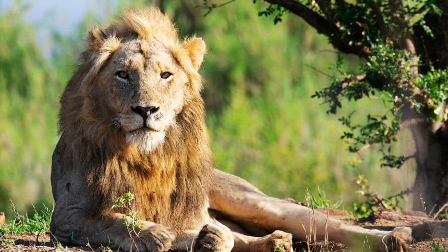
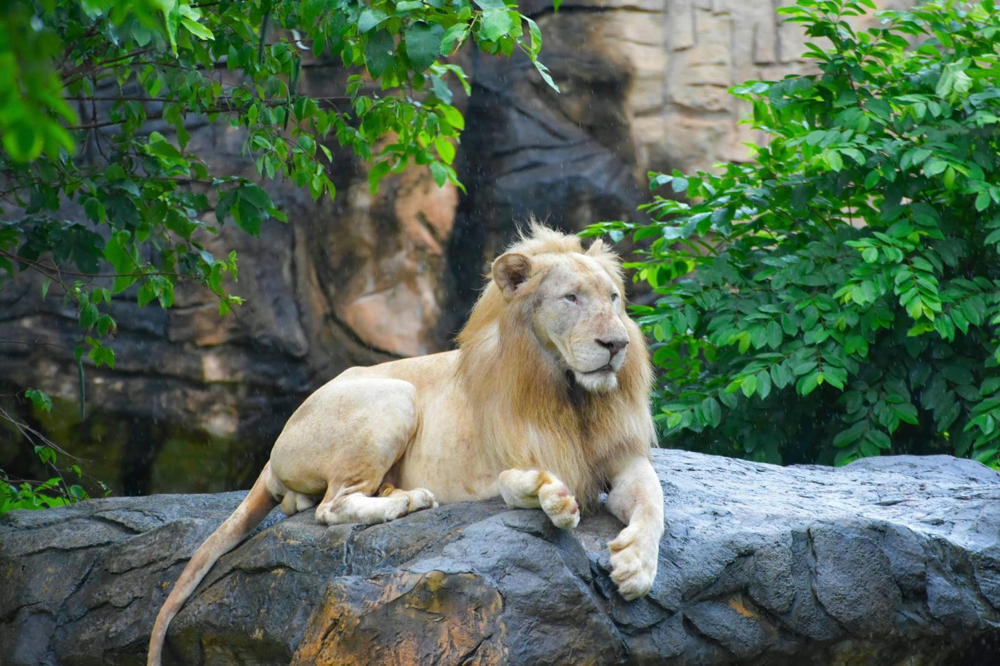

บทความเกี่ยวกับสิงโต

สิงโตเป็นเสือขนาดใหญ่ ขนสั้นเกรียนสีน้ำตาลอ่อน บางตัวอาจมีสีออกเทาเงิน หรือบางตัวก็มีสีอมแดง หรือถึงน้ำตาลแดง
ใบหน้ากว้าง ปากค่อนข้างยาว จมูกมักมีสีดำสนิท ม่านตาสีเหลืองหรืออำพัน รูม่านตากลม หูสั้นกลม หลังหูดำ
ขาหน้าใหญ่และแข็งแรงกว่าขาหลัง อุ้งตีนกว้าง หางค่อนข้างยาว ปลายหางเป็นพู่สีดำ
และมักมีสิ่งคล้ายเดือยแข็งอยู่อันหนึ่งซ่อนอยู่ภายในพู่หางด้วย
- สิงโต เป็นสัตว์ตระกูลแมวที่ใหญ่ที่สุดในโลก ที่เราสามารถพบได้ในทวีปแอฟริกาที่ระดับน้ำทะเลจนถึงระดับสูง 3,000 เมตร
ตามปกติสิงโตไม่อาศัยในป่าทึบ ทะเลทราย หรือที่ชื้น แต่ในอดีตที่นานมากแล้ว สิงโตเคยอาศัยอยู่ในทวีปยุโรป
เพราะมีการพบ fossil ของสิงโตในถ้ำของประเทศอังกฤษ ฝรั่งเศส และเยอรมนีหลายแห่ง และสำหรับในดินแดน Palestine นั้น
คัมภีร์ไบเบิลของคริสต์ศาสนาก็มีการกล่าวถึงสิงโตว่าถูก Samson ฆ่า ประวัติศาสตร์ของอาณาจักร Mesopotamia
ก็มีเรื่องเล่าว่ากษัตริย์ของชนเผ่า Assyria ชอบล่าสิงโต แต่เมื่อถึงวันนี้ยุโรป และเอเชียตะวันตกไม่มีสิงโตเลย
- สิงโตแตกต่างจากสัตว์จำพวกแมวอื่นๆ ตรงที่ชอบอยู่เป็นฝูงตั้งแต่ 2 - 30 ตัว สิงโตที่โตเต็มที่อาจมีลำตัวยาวถึง 3
เมตร (วัดถึงปลายหาง) และสูงประมาณ 1 เมตร มีขนสีน้ำตาล มีลีลาเดินที่สง่า ผ่าเผย ชอบย่องยามล่าเหยื่อ
และชอบนอนพักผ่อนเวลาขี้เกียจ ฟันที่แข็งแรงของมันมีสำหรับทึ้ง กัด และฉีกเนื้อเป็นชิ้นๆ
มีขากรรไกรที่แข็งแรงพอขบศีรษะเหยื่อจนแตกได้ เหยื่อของมันได้แก่ ม้าลาย เก้ง กวาง เลียงผา ฯลฯ การมีสายตาที่แหลมคม
ทำให้มันสามารถเห็นเหยื่อที่อยู่ไกลๆ ได้ในเวลาโพล้เพล้ ตามปกติสิงโตชอบออกล่าเหยื่อในเวลากลางคืน หรือเวลามีพายุ
ในเวลากลางวันมันชอบนอนหลับ พักผ่อนใต้ต้นไม้ หรือกลางทุ่งหญ้า ขณะพักมันจะใช้ตาจับดูม้าลายเล็มหญ้า โดยไม่ทำร้าย
แต่เมื่อถึงเวลาเย็นที่อากาศในบริเวณนั้นมีอุณหภูมิลดลง บรรดาเหยื่อของสิงโตจะรู้ว่าชีวิตของมันเริ่มไม่ปลอดภัย
เพราะสิงโตจะย่องเข้าใกล้ และกระโดดตะปบด้วยความเร็ว 60 - 80 กิโลเมตร/ชั่วโมง แล้วกัดคอจนเหยื่อขาดใจตาย
แต่ถ้าเหยื่อสามารถวิ่งหนีได้ไกล และนาน สิงโตก็จะหยุดไล่ตาม และซุ่มคอยเหยื่อชิ้นใหม่ต่อไป
- สิงโตมีความสามารถในการซ่อนและพรางตัวไม่ให้เหยื่อ เห็นได้ดีมาก แต่กลิ่นตัวของมันมักทำให้สัตว์อื่นรู้ตัวก่อน
ดังนั้น เวลามันล่าเหยื่อ มันจะหมอบอยู่ใต้ลม ให้ลมพัดเข้าหามัน การทำเช่นนี้ทำให้มันได้กลิ่นสัตว์อื่น
แต่สัตว์อื่นไม่ได้กลิ่นมัน และเวลาออกล่าเหยื่อมันจะไปกันเป็นฝูง ทันทีที่เห็นม้าลายสิงโตทุกตัวจะย่องคลานเข้าหา
พอเข้าใกล้เหยื่อ
- สิงโตตัวหนึ่งจะเดินแยกตัวออกทางข้าง สิงโตที่เหลือจะหมอบลง ตัวที่ย่องจะเดินจนถึงตำแหน่งที่ขวางทางลม
ทำให้เหยื่อได้กลิ่นมัน เหยื่อจึงตกใจวิ่งหนีเข้าหาหมู่สิงโตที่หมอบอยู่ให้สิงโตเลือกตะปบกิน
โดยสิงโตจะกระโดดวิ่งอย่างรวดเร็ว พร้อมส่งเสียงคำราม ตามปกติถึงมันจะยังไม่ทันวิ่งเต็มฝีเท้า มันก็ถึงตัวเหยื่อแล้ว
เพราะสิงโตตัวผู้อาจหนักถึง 250 กิโลกรัม และตัวเมียหนักถึง 150 กิโลกรัม ดังนั้น เหยื่อที่ถูกมันชนจะล้มทันที
จากนั้นมันก็ใช้ปากงับที่คอจนคอหักตายอย่างทันทีทันใด แต่ในกรณีเลียงผา หรือละมั่งที่วิ่งเร็ว
สถิติความสำเร็จในการล่าของสิงโตเท่ากับ 20%
- ตามปกติเวลาได้เหยื่อ มันจะแบ่งกันกินกับตัวอื่น โดยทั่วไปสิงโตจะกินเหยื่อสดๆ จนอิ่ม ซึ่งอาจมากถึง 35 กิโลกรัม
หรือคิดเป็นน้ำหนักก็ 1/7 ของน้ำหนักตัว ถ้ามันกินไม่หมด มันก็จะหวนกลับมากินใหม่ เหยื่อที่มันโปรดปราน ได้แก่ ควาย
ม้าลาย หมูป่า ละมั่ง gazaelle, gnu ซึ่งเป็นสัตว์ขนาดใหญ่ แต่ถ้ามันหิว ลิง กระต่าย หรือแม้แต่หนูมันก็กิน
จะมีก็แต่ช้างกับแรดและจระเข้ที่โตเต็มที่เท่านั้นที่ไม่กลัวสิงโต ส่วนลูกช้างหรือลูกแรดนั้น
ถ้าพ่อแม่มันไม่คุ้มกันมันก็มีสิทธิไม่ปลอดภัย

- ตามปกติสิงโตชอบล่าเหยื่อกลางทุ่งกว้าง และในป่าโปร่ง ส่วนในป่าทึบ หรือป่าชื้นที่มีต้นไม้หนาทึบ
มันจะไม่ไปล่าเหยื่อ เพราะสัตว์ที่อาศัยในป่าทึบมักปีนป่ายต้นไม้เก่ง มันจึงปล่อยเหยื่อชนิดนี้ให้เสือล่าแทน
ไม่เพียงแต่ในป่าโปร่งหรือทุ่งกว้างเท่านั้นที่มันชอบล่าเหยื่อ แอ่งน้ำก็ยังเป็นอีกสถานที่หนึ่งที่มันชอบคอยเหยื่อ
เพราะเมื่อถึงหน้าแล้งสัตว์ต่างๆ มักมาที่แหล่งน้ำเพื่อดื่มน้ำ ดังนั้น สิงโตจะมาซุ่มคอยเหยื่อในเวลาเช้า หรือเย็น
สิงโตว่ายน้ำได้ดีและสามารถว่ายข้ามแม่น้ำที่กว้างได้สบายๆ
- โดยทั่วไปสัตว์แทบทุกชนิดเวลาเห็นสิงโตมักวิ่งหนี แต่มีสัตว์สองชนิดที่เดินตามสิงโตอย่างติดๆ สัตว์ที่ว่านั้น คือ
ตัว hyena กับ jackal โดยเฉพาะตัว hyena นั้นมีรูปร่างเหมือนหมาดุที่ชอบกินเนื้อสัตว์ที่ตายแล้ว
แต่สิงโตไม่ชอบกินเนื้อ hyena ด้วยเหตุนี้ตัว hyena จึงปลอดภัย
และสามารถเดินตามสิงโตไปทุกที่เพื่อขอแบ่งเนื้อที่สิงโตล่ามากิน โดยมันจะยืนดูสิงโตจากที่ไกล พอสิงโตกินเหยื่อไม่หมด
มันก็จะเดินเข้าไปกินต่อจนหมด ส่วน jackal นั้นก็มีนิสัยแบบเดียวกับ hyena แต่ฉลาดกว่า และวิ่งเร็วกว่า